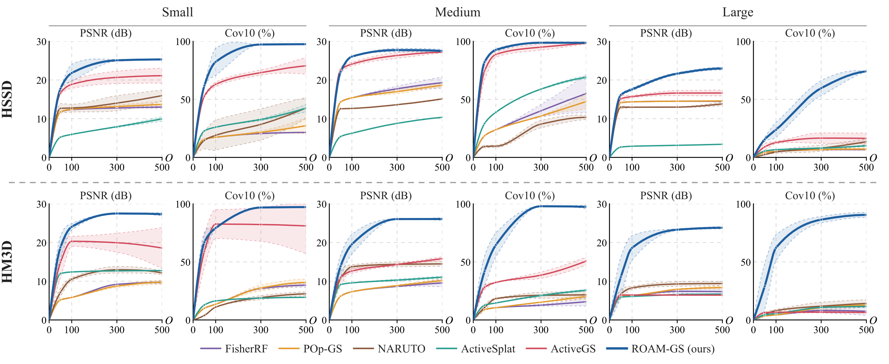
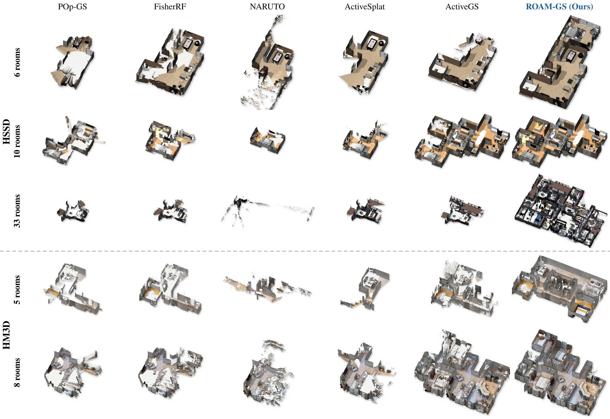
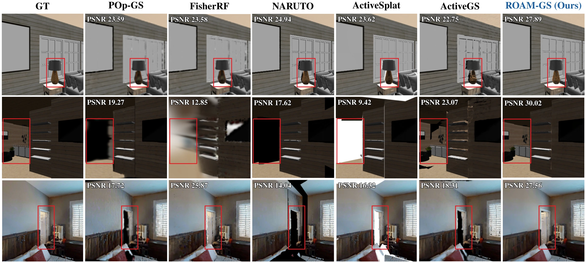

ROAM-GS
Go Far, Look LessActive Multi-Room Reconstruction with Persistent Goals and Selective Views
1 Zhejiang University 2 Chengdu Minto Tech
* Corresponding authors
Video Comparisons
HSSD
HM3D
Abstract
Active 3D reconstruction aims to allocate a sparse view budget to recover complete geometry and high-fidelity renderings. However, existing methods degrade sharply in multi-room homes: myopic next-best-view scoring gives transit no credit for distant rooms and over-polishes irreducible nearby residuals, whereas dense mappers reach far rooms only by streaming thousands of frames.
We propose ROAM-GS, which couples persistent goals with selective views: each decision selects a goal and a variable-horizon prefix toward it, capturing only at its endpoint. A Surface Reconstruction Memory scores poses by projecting post-update defects and viewing directions. Persistent goals credit transit with their remaining value and are released once arrivals stop measurably improving them.
Without per-scene tuning, ROAM-GS achieves state-of-the-art multi-room reconstruction while preserving single-room Replica fidelity, raising mean coverage from 74% to 93% on HSSD and from 47% to 96% (+11.7 dB PSNR) on HM3D, and surpassing 90-minute TRACE dense mapping on a five-room HM3D home within 20 minutes using 165× fewer images.
Overview

Results
Multi-room reconstruction
| Small | Medium | Large | ||||||||
|---|---|---|---|---|---|---|---|---|---|---|
| Dataset | Method | PSNR↑ | Cov10↑ | CM↓ | PSNR↑ | Cov10↑ | CM↓ | PSNR↑ | Cov10↑ | CM↓ |
| HSSD | FisherRF | 13.01± 0.34 | 21.5± 0.1 | 98.3± 0.2 | 19.30± 1.46 | 55.0± 16.5 | 39.1± 16.0 | 14.49± 0.03 | 6.7± 0.1 | 407.6± 0.1 |
| POp-GS | 13.70± 0.85 | 27.3± 6.7 | 80.0± 21.5 | 18.67± 0.43 | 48.1± 6.3 | 43.6± 12.2 | 14.60± 0.13 | 7.2± 1.1 | 404.5± 1.2 | |
| NARUTO | 15.97± 1.42 | 42.6± 9.0 | 49.9± 1.4 | 15.12± 0.12 | 34.5± 1.8 | 92.1± 11.0 | 13.82± 0.50 | 13.5± 2.3 | 117.9± 72.2 | |
| ActiveSplat | 9.95± 0.62 | 42.4± 3.3 | 56.9± 2.5 | 10.37± 0.05 | 68.9± 1.4 | 41.9± 0.5 | 3.39± 0.06 | 10.0± 0.8 | 350.4± 2.7 | |
| ActiveGS | 21.10± 1.94 | 78.9± 7.2 | 28.6± 9.1 | 27.18± 0.18 | 98.2± 0.5 | 7.4± 0.1 | 16.64± 0.75 | 16.4± 4.5 | 322.6± 38.4 | |
| ROAM-GS (ours) | 25.31± 0.14 | 97.5± 0.1 | 3.8± 0.1 | 27.49± 0.41 | 98.7± 0.2 | 7.2± <0.1 | 22.97± 0.38 | 74.1± 0.1 | 11.7± 4.7 | |
| vs. best baseline | +4.2 | +18.6 | −24.8 | +0.3 | +0.5 | −0.2 | +6.3 | +57.7 | −106.2 | |
| HM3D | FisherRF | 9.72± 0.39 | 29.9± 1.8 | 68.6± 8.9 | 9.56± 0.99 | 15.7± 3.8 | 131.6± 11.8 | 7.31± 1.07 | 7.4± 3.5 | 273.3± 73.1 |
| POp-GS | 9.73± 0.54 | 32.3± 2.9 | 65.4± 7.9 | 10.18± 0.49 | 20.3± 2.8 | 124.2± 2.1 | 8.37± 0.47 | 12.7± 1.4 | 224.1± 18.4 | |
| NARUTO | 12.15± 0.47 | 22.5± 1.7 | 50.6± 5.4 | 14.48± 0.60 | 21.6± 2.8 | 101.1± 11.7 | 9.42± 0.51 | 14.22± 3.21 | 199.12± 45.19 | |
| ActiveSplat | 12.76± 0.01 | 19.5± 0.1 | 162.2± 0.3 | 11.06± 0.27 | 25.6± 0.8 | 99.1± 6.4 | 6.69± 0.08 | 11.6± 0.7 | 234.4± 2.0 | |
| ActiveGS | 18.59± 5.28 | 81.0± 23.9 | 22.9± 28.0 | 15.84± 0.51 | 50.7± 3.5 | 63.7± 9.5 | 6.42± 0.02 | 6.5± 0.5 | 327.9± 2.3 | |
| ROAM-GS (ours) | 27.33± 0.40 | 97.2± 0.3 | 3.1± <0.1 | 26.08± 0.34 | 97.4± 1.5 | 3.3± 0.7 | 23.82± 0.29 | 90.5± 2.2 | 7.1± 0.4 | |
| vs. best baseline | +8.7 | +16.2 | −19.8 | +10.2 | +46.7 | −60.4 | +14.4 | +76.3 | −192.0 | |
Homes per size group (S/M/L) · HSSD 2/2/1 · HM3D 1/2/1.
500 views · Mean ± SD across three seeds. PSNR (dB) · Cov10 (%) · CM (cm).
Single-room reconstruction on Replica
| Method | PSNR ↑ | SSIM ↑ | LPIPS ↓ | Cov10 ↑ | Cov5 ↑ | CM ↓ |
|---|---|---|---|---|---|---|
| FisherRF | 30.87 | 0.9051 | 0.2293 | 87.01 | 82.27 | 3.771 |
| POp-GS | 27.51 | 0.8375 | 0.2634 | 67.22 | 63.69 | 10.183 |
| NARUTO | 29.22 | 0.8728 | 0.3126 | 99.43 | 97.71 | 2.241 |
| ActiveSplat | 21.89 | 0.8833 | 0.1889 | 84.16 | 80.89 | 5.858 |
| TRACE | 34.33 | 0.9482 | 0.0730 | 98.20 | 96.09 | 2.050 |
| ActiveGS | 36.32 | 0.9588 | 0.0727 | 99.60 | 98.92 | 2.108 |
| ROAM-GS (ours) | 36.75 | 0.9604 | 0.0763 | 99.94 | 99.24 | 2.076 |
200 mapping frames per method. Mean over Office0, Office1, and Room0. PSNR (dB) · Cov10 and Cov5 (%) · CM (cm).
PSNR and surface coverage by observation count

Reconstructed geometry

Novel view synthesis
